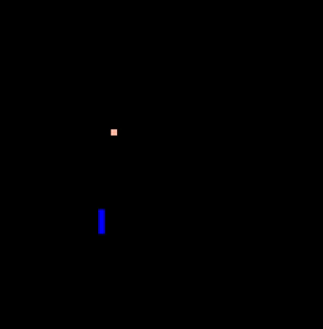
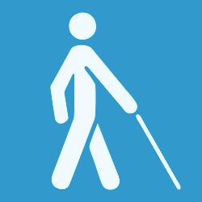
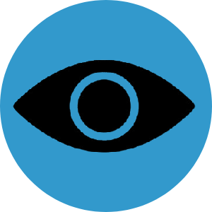
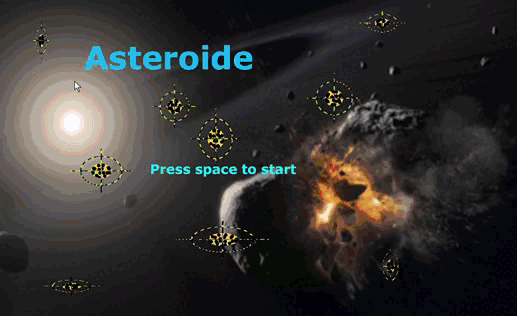
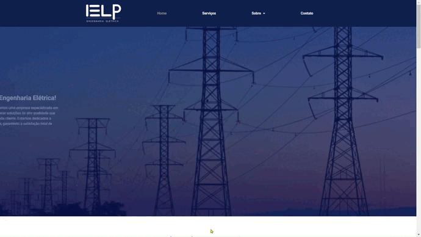
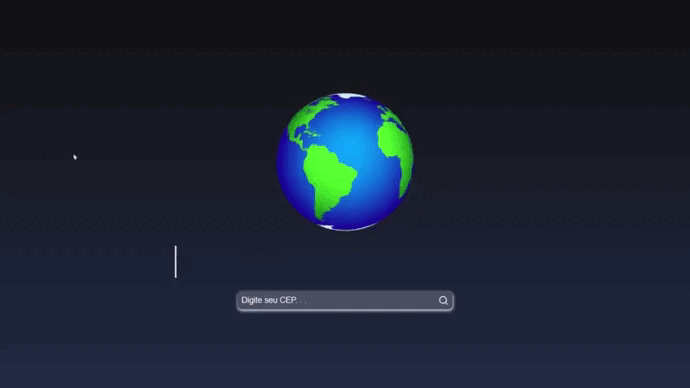
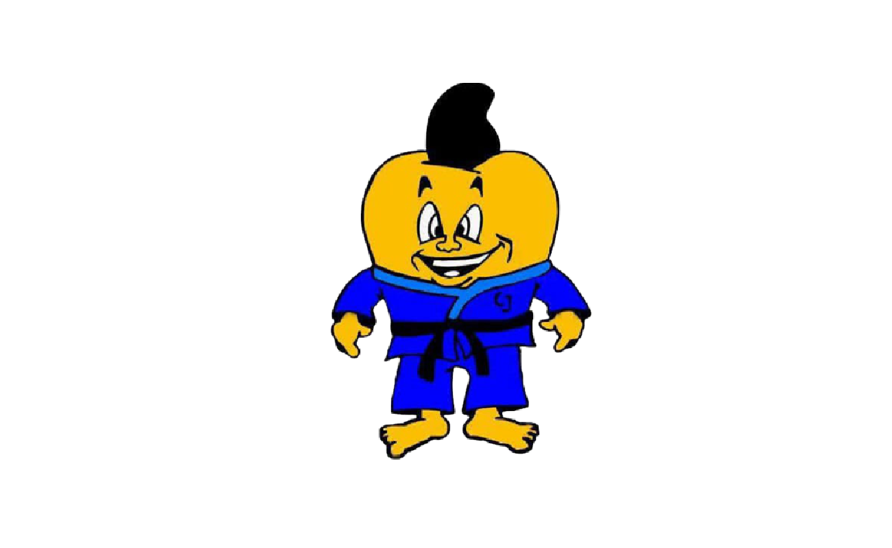

Snake
Jogo de capturar maçãs sem colidir com paredes ou com o próprio corpo.
Abrir Projeto
Este site foi pensado com foco em acessibilidade, navegação simples e suporte a leitores de tela. Saiba Mais

Jogos criados em Python — neste repositório reúno 4 jogos desenvolvidos com Pygame no início da minha jornada.
Tecnologias: Python • Pygame
Abrir Repositório
Site desenvolvido para a IELP Engenharia, uma empresa especializada em serviços de engenharia elétrica.
Tecnologias: WordPress • Elementor • Figma
Abrir Projeto
O Busca CEP retorna endereços através de ceps fornecidos. Para este projeto utilizei a API viacep.com.br/ws/"CEP"/json.
Tecnologias: JavaScript • React.js • CSS
Abrir Projeto
Este projeto é um dos meus favoritos e foi um dos meus primeiros. Eu o desenvolvi para ajudar meus professores de Jiu-Jitsu. Quando o criei não tinha muita noção de como funcionava o processo de desenvolvimento de um sistema web. Trata-se de um sistema de gerenciamento de alunos que controla a presença e a ficha técnica, incluindo graduação, peso e todos os requisitos de um atleta.
Tecnologias: Python • Flask • SQLite • JavaScript • CSS • HTML
Abrir ProjetoOlá, seja bem-vindo! Eu me chamo Vítor Viana, sou PcD com baixa visão em ambos os olhos e desenvolvedor back-end com foco em engenharia de software, arquitetura e boas práticas de desenvolvimento. Atualmente, curso Sistemas de Informação na Universidade Federal Fluminense (UFF) e tenho interesse em construir software com organização, escalabilidade e legibilidade.
Tenho experiência em projetos acadêmicos e colaborativos, atuando com desenvolvimento em equipe, APIs REST, orientação a objetos, SOLID, Clean Architecture, Git, Kanban e bancos de dados. No meu percurso profissional e acadêmico, tive contato com Delphi, .NET, ASP.NET Core, Flutter, Firebase, SQL Server e outras tecnologias que me ajudaram a evoluir tanto na implementação quanto na estruturação de sistemas.
Também valorizo acessibilidade e procuro criar soluções que sejam úteis para diferentes perfis de usuários, sempre com atenção à usabilidade e à clareza da experiência.
Se você chegou até aqui, agradeço sua atenção e fico à disposição para trocar ideias sobre tecnologia, carreira e desenvolvimento de software.